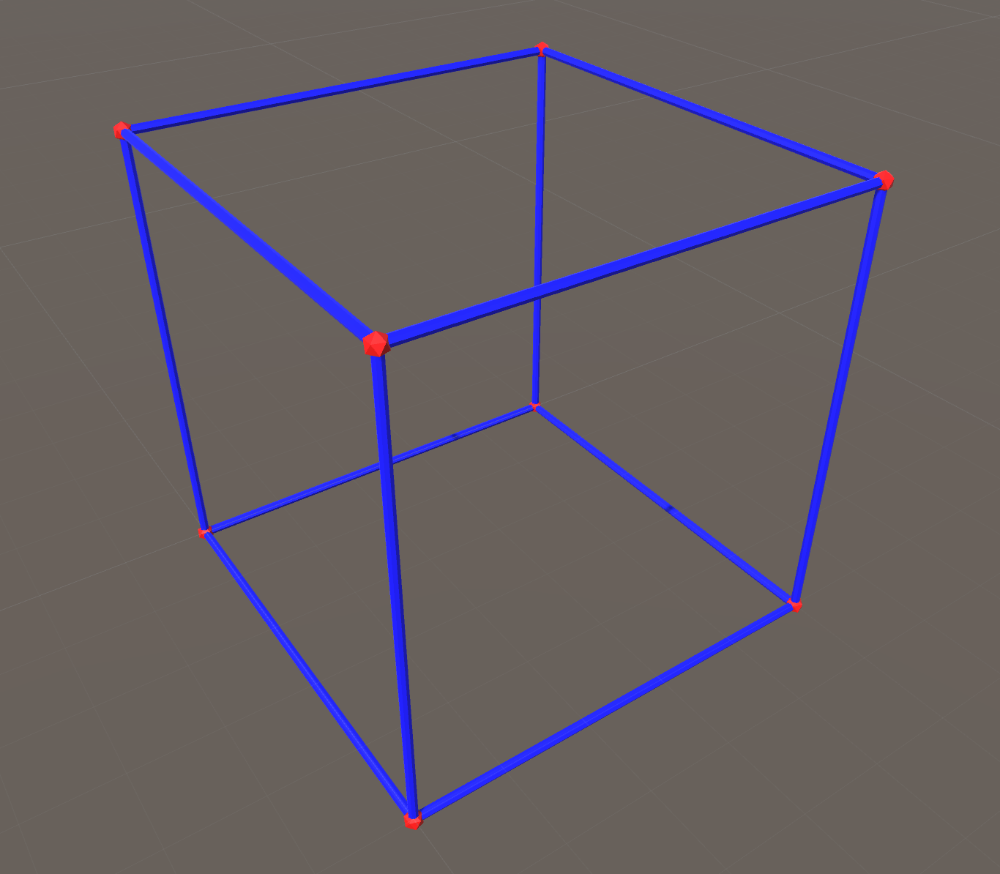

Building a Modular Unity Workflow
Posted on Tue 15 August 2017 in tutorial
Intro
So... I've been playing with Unity now for a year or so. And while I'm not a prolific Unity developer by any stretch of the imagination, I am getting to the point where I've worked on multiple projects and have had a need to reuse bits and pieces of projects. Now, being the practical guy I am, I've started doing this by taking the path of least resistance... just copy-n-paste the code I need into the separate projects, editing as required to remove project-specific stuff like namespaces, local submodules, etc. And I guess this works for some definition of works. It seems like it never fails that while I'm updating code for re-use, that I'll find some minor (or major) improvement on that code, but will only make the change for the new code base.
Also, I'm trying to get into the practice of actually testing my code (ya, crazy I know), which leads to additional complexity when trying to cut-n-paste and maintain both the code and tests.
Cutting to the chase... what I'm going to present is how I've tackled this issue using git submodules, symlinks and some simple workflow rules.
Basics
There's a few assumptions that I'm going to make here:
- You're using Unity and have C# projects
- You're using git for version control
- You're using OSX Unity or are comfortable enough with Windows to translate my unix commands (sorry, haven't tested on Windows)
- You have code that is modular and want to use it across multiple projects
To accomplish this last point, I've identified pieces of projects that I want to break out into separate modules. For the most part, these modules provide a specific set of classes/functions and are self-contained with very few dependencies on other modules. Best to plan for this up front if you can.
Full Unity Projects
To start with, each of my modules is a full unity project. This allows me to do things like maintain test scenes with integration tests and have project specific unit tests. I use a specific folder structure so that when I link modules together, only the module code gets integrated.
So, starting with the standard Unity project folders for an example module named mymodule:
mymodule/
ProjectSettings/
Library/
Assets/
I build out the Assets folder like this:
mymodule/Assets/
Plugins/
Scenes/
Scripts/
test/
Editor/
mymodule/
The Plugins folder will be used for linking modules together, so it might not be needed for every project. The Scenes folder is for all of your Unity scenes. Under Scripts, you'll note there are two separate folders. A test folder and another mymodule folder. I use the test folder for all of my project specific tests, including unit tests (under the Editor folder) and Unity integration tests (e.g.: scripts for test scenes, etc.). All of the module code would go under the second mymodule folder. This second project folder will be used when we link project code together ... to be explained below.
To avoid name collisions and keep everything tidy, I use a separate namespace for each module/project.
Git Submodules
The whole key for how modules are going to work is through the use of Git Submodules to pull in the external module and the use of symlinks to pull only the code portion of the external module into the referencing project.
The best way to explain this is probably to walk through a real example. In this case, I have two existing modules that I want to reference in a third:
- tytest - A simple test framework
- tymesh - A utility class for working with dynamic meshes
- tysimpleshape - Another utility class that provide simple methods for drawing lines/dots in Unity
Let's start by assuming that tytest and tymesh already exist and are already under upstream git control. Let's also assume that I have tysimpleshape built out as a Unity project and is under local git control. tysimpleshape directly references the tymesh module, as it is using the IMeshData interface to build out the mesh for simple objects. It also references the tytest module for defining a few simple unity integration tests which show off the rendering of the simple shapes. Following the directory structure I outlined above, I've created the following directory tree for this tysimpleshape project:
tysimpleshape/Assets/
Plugins/
Scenes/
Scripts/
test/
tysimpleshape/
Linking the dependent modules is actually pretty straightforward.
Create a top-level submodules folder under the main tysimpleshape folder and change into that folder:
% cd ~/repos/tysimpleshape
% mkdir submodules
% cd submodules
Now, tell git to add the appropriate submodules using the git submodule command:
% git submodule add https://bitbucket.org/ptjal/tytest
% git submodule add https://bitbucket.org/ptjal/tymesh
That wasn't so bad, but we're not quite done yet. First a note on what this actually does... it makes a copy of both of these git repositories under the submodules folder and tells git to keep track of these submodules as being part of the current repository (tysimpleshape). It uses the current head of each of these repositories at the time that you create the submodule reference. This is important to note, as making changes to these upstream modules will not automatically be replicated into the referencing module. You'll have to update the links manually (to be covered below).
One other note on the command that was run is that we did not tell submodule to run recursively. This means that if any of the submodules that we reference have dependencies of their own, we won't pick those subdependencies up automatically. And this is actually by design. I want to try to keep the dependency tree flat and so if there are dependencies on using a submodule, I actually want the referencing module to own that dependency. There might be better ways to handle this, but for now this is working for me. This doesn't apply for this example, as there are no nested dependencies in any of these modules.
To see the current status of affairs after running these submodule commands:
% git submodule status
2875038fba3f4b4a5b9bb27442e88aa9bbe6adff submodules/tymesh (heads/master)
9b0cb96504a1704b5a65827090a628890be4f2d7 submodules/tytest (heads/master)
% git status
On branch master
Your branch is up-to-date with 'origin/master'.
Changes to be committed:
(use "git reset HEAD <file>..." to unstage)
new file: .gitmodules
new file: submodules/tymesh
new file: submodules/tytest
Before going on, commit the current changes and push changes upstream.
% git commit -m "linked submodules tymesh and tytest"
% git push -u origin master
We now have the repositories/modules that we reference into our referencing module's repository, but we're not quite ready yet. Remember that each of the repositories in this scheme are full Unity projects. We really don't want all of the other project files to show up in the Unity editor for the current project (e.g.: extra scenes, tests, etc.). By linking the submodules to a top-level directory under the project, Unity will not automatically process the Assets folder in the submodules. But, we need to make Unity aware of our module code somehow... To make this work, we're going to do something that Unity tells us not to do, create symlinks in projects. But, we actually do know what we are doing in this case, and it will be OK, trust me.
So, let's create those symlinks:
Change the working directory to the Plugins directory:
% cd ~/repos/tysimpleshape/Assets/Plugins
Create relative links to the submodules. Note that we use the module code folder under Scripts. This is what makes this work. We are only pulling in the code from the modules, not the rest of the Unity project files by doing it this way.
% ln -s ../../submodules/tymesh/Assets/Scripts/tymesh .
% ln -s ../../submodules/tytest/Assets/Scripts/tytest .
% ls -l
total 16
lrwxr-xr-x 1 tylor staff 45 Aug 15 10:29 tymesh@ -> ../../submodules/tymesh/Assets/Scripts/tymesh
lrwxr-xr-x 1 tylor staff 45 Aug 15 10:29 tytest@ -> ../../submodules/tytest/Assets/Scripts/tytest
And that's it. Your Unity project should now build, referencing the submodules that you need.
Maintaining Submodules
As I mentioned above, when you create a reference to a submodule, git will determine the current head of the submodule and store that as a reference. If you make changes to the upstream module, you won't see those changes until you tell git to update the local references. Again, this is super easy (as of git 1.8.2):
% git submodule update --remote --merge
To keep things simple, I strongly encourage you to only change referenced submodules upstream, not locally within the local submodule links. I know you can do this, I just find it less confusing not to.
Git Clone with Submodules
The above steps get you setup with your github repo referencing submodules. But what if you want to clone a git repo that already has submodule references? Git clone will not automatically follow submodule references, but you can tell it to:
% git clone --recursive https://ptjal@bitbucket.org/ptjal/tysimpleshape.git
Try It Out
The referenced repositories are public. Feel free to try it out and/or poke around. Not much to look at, but here's my little simple shape test:

Credits
No, I didn't come up with all myself. In fact, most of what I'm doing has been described in Prime31's Blog. I changed up some of the directory layout to suit my needs.